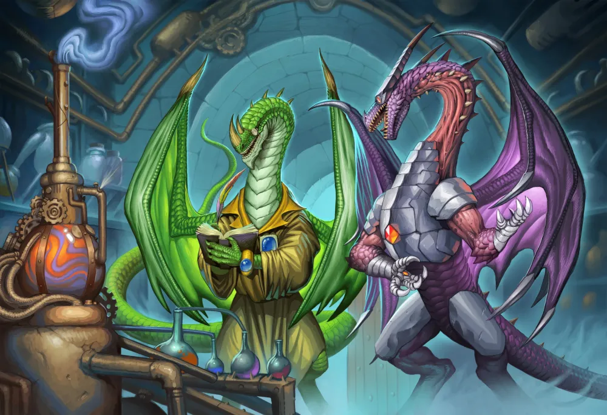

尊贵的瑞扎尼瓦什：
经过漫长的潜心研习与实地游历，我已将有关这群所谓“异类龙”的研究发现汇编如下。尽管我认为这个称呼颇具侮辱意味――毕竟其中许多巨龙之所以拥有这般生理构造，纯属出生境遇中的不幸意外――但“异类”这一称号倒也不无几分道理。
即便对于我们这些生于充盈世间的魔力、因而呈现出千姿百态躯体差异的巨龙而言，异类龙也依然游离于神秘与超自然的常规之外。有些异类龙自豪地拥抱自身异类的身份，顺势将这一标签发扬光大――它们要么遗世独立、自我隔绝，要么用卑劣的行径将旁人统统赶走。不过，在它们之中，绝大多数施行永恒之光仪式的个体都是为了寻觅一处归属之地；依鄙人之愚见，此举实属难能可贵。
无论如何，你将会看到，“异类龙”的命运随时都有可能降临在我们任何一员的头上。大多数异类龙自诞生之初便魔力满溢，但这绝非必然的铁律。既然我们每一条巨龙都有可能变成异类龙，我认为深入了解它们的处境正是我辈分内之责。事不关己时自然容易视而不见，可一旦某件事可能波及自身，任谁都会上心！正因如此，这一特殊课题或许正是吸引其他巨龙关注我们这项全新研究的绝佳契机。
谨致一如既往的竭诚效忠
――永光贤者卡利赞德雷克斯
欢迎来到《Battlezoo 巨龙：异类龙》！自《Battlezoo 先祖：巨龙》问世以来，这几年可谓风云变幻；我们听到了无数呼唤更多巨龙的声音，于是这本异类龙专著便应运而生了。本书关于异类龙的大部分内容，都源自资深作者杰森・基利（Jason Keeley）天马行空的奇思妙想――他曾为 Roll For Combat 与 Paizo 撰写过大量作品。我认为他在诙谐风趣、引人入胜与酷炫帅气之间找到了绝妙的平衡。
正如最初的巨龙血统规则一样，让一条巨龙与其他种族及职业的角色并肩冒险，还能兼顾趣味性与游戏平衡性，这听起来或许有些难以置信；但我有十足的把握，这一版设计定能不负众望――这尤其要归功于五版怪物设计大师保罗・休斯（Paul Hughes）、资深设计师兼开发者威廉・费舍尔（William Fischer）的鼎力相助，以及众多测试玩家的付出：他们在肯定原有设计框架的同时，也贡献了海量精彩绝伦的点子，并最终融入到了成书之中。如果你们的跑团小队在游玩时发现本书有任何内容相比基础种族与职业显得过于超模，请随时告知我们，我们定会为你排忧解难！
闲言少叙，这就让我们一起来看看这本书里都有哪些精彩内容吧！
跟随我们的叙述者――巨龙学者卡利赞德雷克斯的脚步，一同领略异类龙那汹涌澎湃的非凡魔力吧。为了契合异类龙五花八门、不拘一格的本性，卡利赞德雷克斯汇集了大量与异类龙息息相关的奇异据点与地域风物残篇。本章短小精悍，无论是想要揣摩异类龙角色言行举止的GM，还是构思角色扮演的玩家，都能从中获得绝佳启发。
对于广大玩家而言，本章无疑是重头戏。我们在此收录了扮演任意异类龙传承的巨龙角色所需的全部规则内容，包括巨龙种族基础规则、全新的巨龙职业、巨龙蹂躏者与巨龙法师子职，以及专为五种异类龙血统量身打造的全新龙之馈赠。本章末尾还附有出自卡利赞德雷克斯案头的五种异类龙血统背景学识，专为玩家视角撰写。当然我们也同样欢迎GM翻阅这部分内容，不过这些学识主要旨在帮助正在构思角色背景故事与文化认同的玩家。
本章是一部怪物图鉴，完整收录了全部五种异类龙传承在青年、成年、远古及太古四个年龄段的数据资料卡，并配有面向GM的背景学识与卡利赞德雷克斯的研究札记。你还可以在此找到大量边栏与专题记述，其中描绘了每种传承下多位声名显赫的强大巨龙，既可直接用作战役的剧情钩子，也能为你的游戏提供灵感源泉――它们中有些出自杰森或我本人之手，另一些则由热爱巨龙的同好们共同创作。
这篇摘自卡利赞德雷克斯研究日志的独立专题文章，探讨的并非异类龙，而是经典的太古龙。文中的每一种巨龙都拥有强化版数据资料卡，能为你的高等级玩家角色带来远超默认版本的严峻挑战；此外还收录了关于太古龙的通识介绍与特定太古龙个体的背景秘闻，方便你轻松将其引入自己的战役之中。附录中还包含两张供太古金龙、太古银龙与太古靛青龙使用的全幅巢穴地图，以及围绕这些特定太古龙展开的详尽设定与背景故事。
――马克・塞夫特（Mark Seifter），Roll For Combat
游戏设计总监
下列术语与具名角色均会在正文的相应语境中予以定义和阐释，但我们在此将它们一并汇总，以便快速查阅。
永光龙 施行过永恒之光仪式的巨龙。永光龙往往过着跌宕起伏、充满冒险精神的生活，依靠自身的历练与阅历不断成长，而非单纯随着岁月流逝自然老去。
卡利赞德雷克斯 一位痴迷于研究永恒之光仪式――尤其是永光龙群体――的永光绿龙学者；不过在较小程度上，他也对鲜为人知的巨龙通识秘闻抱有浓厚兴趣。为了开展田野调查，卡利赞德雷克斯不惜一切代价，甚至甘愿置身于重重险境之中，并将研究成果编撰成册、广为出版。他正是本书在设定世界观内的执笔作者与叙述者。
永恒之光仪式 这项神秘的仪式能让巨龙将原本贯穿一生的魔力潜能一次性尽数充入体内；这虽然会令其体内的魔力暂时短路衰退，却也能让它们在不断逼迫自身突破极限的过程中，以远超寻常巨龙的速度飞跃成长。成功完成该仪式的巨龙即被称为永光龙。
瑞扎尼瓦什 一位鳞片闪耀如白银的强大永光龙。瑞扎尼瓦什在巨龙霸主大赛上先是击败了所属巨龙家族的冠军，继而又力压其余所有巨龙家族的冠军，从而荣膺任期十年的巨龙霸主。这一头衔在很大程度上属于礼仪性质――毕竟这场大赛更接近一场体育竞技盛会，而非真正意义上的龙族政治角力――但它赋予了瑞扎尼瓦什为未来十年倡议行动方针的权利，并能让相当数量的巨龙至少认真考虑协助她将其付诸实现。就瑞扎尼瓦什而言，她致力于向世界各地隐世不出的巨龙家族伸出橄榄枝，并将这些家族称为“秘隐巨龙”。
传统派巨龙 未曾施行永恒之光仪式的巨龙。传统派巨龙往往更严格地遵循自身血统世代相传的龙族常规（对许多巨龙来说，这就意味着聚敛一座宝库，并在看守财宝的酣眠中度过漫长岁月）。